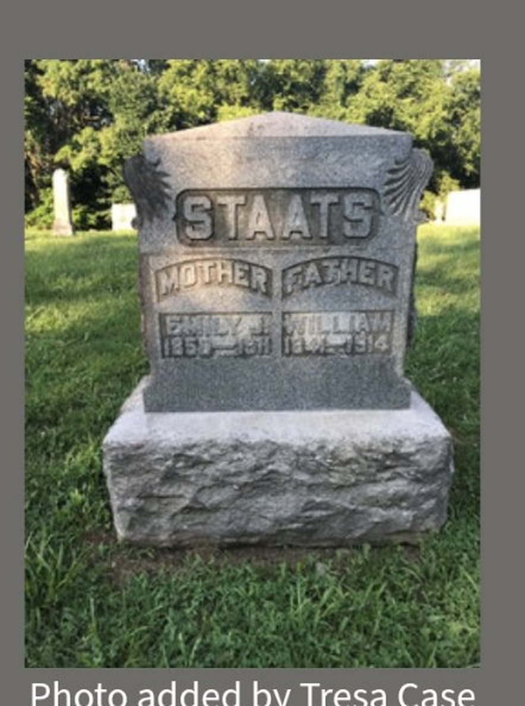

Emily Jane Casto
Quick Facts
Born
After 1 June 1850, Jackson County, Virginia (now West Virginia)
Died
1911, Jackson County, West Virginia
Last residence
Family farm, four miles south of Ripley, Jackson County, West Virginia
Buried
Old Siniaville Cemetery, Staats Mills, Jackson County, West Virginia
Occupation
Not recorded
Religion
No personal church membership recorded
Immediate Family
Siblings
- Louisa Casto Staats (1847–1893)
- Martha A. Casto (1851–1857)
- Addison Adam Casto (1854–1936)
- Addison Augustine Casto (1855–1936)
- Mary Alice Casto Staats (1860–1931)
- William H. Casto (1863–1937)
- George N. Casto (1865–1936)
- Everett Casto (1872–1946)
- Lenora "Nora" Casto Parsons (1871–1955, half-sister)
On Family Tree Sites
Couple Folder
Life Timeline
After 1 June 1850 · age 0
Born in Jackson County, Virginia (now West Virginia); she is absent from her father's household in the 1 June census.
3 June 1866 · age 15–16
Married William F. Staats in Jackson County, West Virginia; the marriage index names her parents Nicholas and Telitha.
1867–1883 · about ages 16–33
Eight children born, the youngest, Edda D., died in childhood.
1911 · about age 60–61
Died in Jackson County, West Virginia; buried beside William at Old Siniaville Cemetery.
Life Story
Emily Jane Casto was born in 1850 in Jackson County, Virginia, the daughter of Nicholas L. Casto and Telitha Jane Casto — and the date of her birth can be narrowed by a single absence. The 1850 census, taken as of 1 June, shows her father's household with only an infant daughter, Louisa; Emily is not in it, so she was born after that day, later in 1850. The stone she shares with her husband says the same year, and it settles the question against a 1923 county history that gives her birth as 1847 and her death as 1910 — both figures are outliers, and both are set aside here.
She married William F. Staats on 3 June 1866, aged sixteen, in Jackson County. The marriage index entry is the record that settles her parentage: “Casto, Emily J., 16, daughter of Nicholas & Telitha.” Her father's 1913 obituary corroborates it in its own way, listing among his children “Mrs. W. M. Staats, deceased” — a newsprint misprint for W. F., since Emily had died in 1911 and no W. M. Staats exists to be confused with her husband.
Eight children were born between 1867 and 1883, and Emily's life, as far as the records show it, was the farm four miles south of Ripley and the family buried around her at Old Siniaville: her youngest, Edda D., at three years old, and then Emily herself in 1911, laid beside William under the shared stone that reads “Emily J ‘Mother’ 1850–1911.” No obituary for her has been found, no exact day of her birth or death is verified, and the “Jane” of her middle name comes from the family list alone — the records give only the initial “J.” What survives of her father's world, the Casto Hole ballad feud and the Tug Fork Home Guard he captained, belongs to his story, not hers, and this page claims none of it for her.
Sources and Evidence
- Jackson County, West Virginia, marriage index 1831–1879, p. 65, transcribed in Casto Connections, Issue 24 (July 2003): “Casto, Emily J., 16, daughter of Nicholas & Telitha — Staats, William, 24, son of Isaac & Eliza — Jun. 3, 1866.” The original register image has not been viewed; the transcription is the source.
- 1850 census, Jackson County, Virginia, household 351: Nicholas Casto, wife Talitha, infant daughter Louisa — Emily absent, consistent with a birth after 1 June 1850.
- Old Siniaville Cemetery survey, 11 May 2006 (Jackson County WVGenWeb): Row 2, shared stone, “Staats, Emily J ‘Mother’ 1850–1911” beside “Staats, William ‘Father’ 1841–1914,” photographed.
- Harold Staats, Genealogy of the Staats Family (1921, public domain): the eight children, including Edda D., and the marriage to Emily Jane Casto, daughter of Nicholas Casto, 3 June 1866. A compiled family genealogy, not records.
- History of West Virginia, Old and New, vol. III (1923, public domain), “Enoch Staats” sketch, printed p. 542: Emily's outlier years (born at Staats Mill in 1847, died at the home farm in 1910) — both rejected against the stone and the census.
- Rev. Nicholas L. Casto obituary, Mountaineer, 7 February 1913, listing “Mrs. W. M. Staats, deceased” among his children.
- Find a Grave memorial 43170951 (Emily Jane Casto Staats, 1850–1911, Old Siniaville Cemetery), confirmed by matching name, years, cemetery, parents, and spouse; and memorial 8379958 (William Staats, 1841–1914, same cemetery).
Research Notes and Open Questions
- Siblings. Her Find a Grave memorial names eight siblings — Louisa Casto Staats (1847–1893), Martha A Casto (1851–1857), Addison Adam Casto (1854–1936), Addison Augustine Casto (1855–1936), Mary Alice Casto Staats (1860–1931), William H Casto (1863–1937), George N. Casto (1865–1936), and Everett Casto (1872–1946) — and one half-sibling, Lenora "Nora" Casto Parsons (1871–1955). None is linked on this page. The two Addison names are carried as Find a Grave lists them; whether they are two brothers or one man listed twice is not settled here.
- Birth year settled against the county history. The 1923 county history gives Emily's birth as 1847 at Staats Mill and her death as 1910. Both are rejected: she is absent from her father's household on the census of 1 June 1850, which fits a birth later in 1850, and her stone reads 1850–1911. The exact day sometimes carried on the trees (13 January 1911 for her death) was removed as unverified, and no exact day is carried here.
- “Jane” comes from the family list alone. The records give only the initial “J.” — the marriage index, the stone (“Emily J”), and the county history all agree on the initial and nothing more.
- Her father's stories are not hers. The Casto Hole poetic feud (her father's lost anti-Confederate poem, Elihugh Powers's answering ballad, and a tar-and-feathering threat that calmer counsel stopped) and the Tug Fork Home Guard her father captained are documented as family and local history, but no record ties Emily herself to either, and this page claims neither for her. The runaway-slave-refuge claim sometimes attached to the Casto Hole is explicitly “it has been said” — local lore, never stated as fact.
- The children's conflicts are carried on William's page. Cordelia's death year (1898 or 1894), Ava Belle's husband's surname (Post or Pfost) and death year (1900 or 1906), Enoch's marriage year (1899 or 1894), and the Geni years that differ from the card (Enoch 1876, Cora 1880, Dora 1877) are all set out there; the card here follows the same dates.
- William A. Staats is not listed as a child here. Geni links him as a son of this couple, and Sarah's page lists him as a sibling, but both the 1921 genealogy and the 1923 county history omit him entirely, and no record confirms his parentage.
- Edda D. Her stone stands in Old Siniaville Cemetery, Row 7, and the 1921 genealogy names her as the eighth child, but she matches no other named child and has no Geni profile; Find a Grave lists her (1883–1886) as a child on Emily's memorial. She is carried here unlinked, with her death year as 1886 or 1888.
- No portrait of Emily has been found; her shared gravestone photograph with William is shown here. No obituary has been found; the 1911 Jackson County obituaries contain no Staats entry. The gravestone photograph comes from her Find a Grave memorial (photograph by Tresa Case), pulled in full from the memorial on 5 November 2026. The couple folder holds three contextual views — the Jackson County Courthouse at Ripley, the Staats Mill covered bridge, and a West Virginia gristmill — and none is shown here. No occupation and no church membership of her own are recorded.